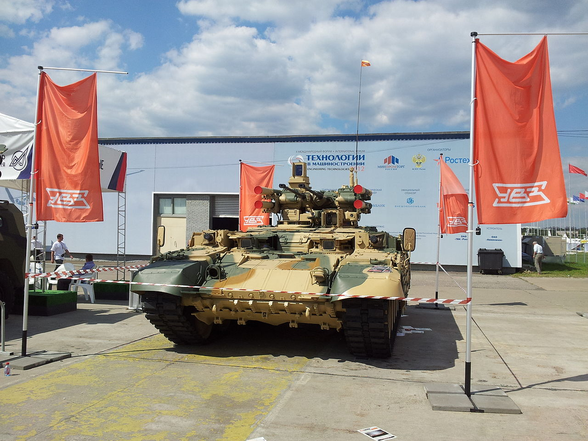

Терминатор (БМПТ)
Терминатор (БМПТ) - российская боевая машина поддержки танков, предназначенная для действия в составе танковых формирований с целью поражения противотанковых средств противника: для эффективного подавления живой силы противника, оснащённой гранатомётами, противотанковыми комплексами, стрелковым оружием; есть также возможность поражать на ходу и с места танки, БМП, дот, дзот и другие высокозащищённые цели.
История создания
Название
На стадии разработки данный образец получил название «Объект 199», которое является индексом ГАБТУ, присваиваемым только на время испытаний.
На официальном сайте УВЗ образец называется исключительно как «Терминатор».
В августе 2012 года Комитет Государственной думы по делам обороны под председательством Владимира Комоедова потребовал от руководства УВЗ изменить название БМПТ «Терминатор» на слово русского происхождения. Неназванные представители УВЗ, согласно публикации газеты «Известия», дали объяснение, по которому название «Терминатор» является рекламным для продвижения на внешних рынках, и образец будет именоваться «Рамка-99» только в случае его принятия на вооружение в российской армии.
Согласно официальным заявлениям, данный образец будет поступать на вооружение российской армии под названием «Терминатор».
Разработка
Работы по БМПТ начались ещё в середине 1980-х годов, первый вариант машины был создан в ЧТЗ, на базе танка Т-72А (ничего общего с современной машиной не имеет), также в разработке принимало участие Омское КБ.
Созданию БМПТ предшествовала разработка на рубеже 1980—90-х годов специализированных боевых машин — «танков для пограничных войск».
Современный вариант БМПТ был разработан в ФГУП «Уральское КБ транспортного машиностроения» («Уралвагонзавод», г. Нижний Тагил) по заказу и ТТХ ГАБТУ Министерства Обороны РФ с 1998 по 2000 год на базе танка Т-72, в 1999 году было начато создание образца на базе Т-90
Первый представленный в 2000 году образец имел вынесенный блок вооружения с одной 30-мм пушкой 2А42, спаренным с ней 7,62 ПКТМ и четырьмя пусковыми установками ПТУР «Корнет», также на машине в надгусеничных полках установлены 2 30-мм гранатомета АГС-17Д.
В 2002 году на машине было установлено уже две 30-мм пушки 2А42 и КУВ «Атака-Т». Причиной отказа от малокалиберных пушек калибром больше 30 мм стали:
- Резкое сокращение боекомплекта и боевой скорострельности боевого модуля — повышение калибра на 10 мм влечет сокращение боезапаса в 1,5 раза;
- Отсутствие в Российской Федерации на тот момент отработанных технических решений автоматической подачи и зарядки пушки калибром больше 30 мм;
- Увеличение массогабаритных показателей вооружения при возрастании калибра;
- Отсутствие унифицированной номенклатуры боеприпасов калибра больше 30-мм.
За время государственных испытаний два опытных образца БМПТ прошли около 10000 км, произвели несколько тысяч выстрелов из штатного вооружения и несколько десятков пусков ПТУР. Государственные испытания успешно были завершены в 2006 году, а в 2008 году состоялась защита диссертации на соискание ученой степени доктора технических наук сотрудником 38 НИИИ МО РФ к.т. н. Парфеновым Евгением Ивановичем на тему «Обоснование и оценка технического облика машины для поддержки танков (БМПТ)».
Принятие на вооружение
{kind=link}
Несмотря на официальные заявления, что до 2010 года будет создана одна рота в Сухопутных войсках, полностью оснащённая новыми машинами[10], в 2009 году принятие БМПТ на вооружение ВС РФ не состоялось. Серийное производство БМПТ освоено на ОАО «НПК „Уралвагонзавод“» в 2011 году, перед поставками в Казахстан.
В начале 2010 года было официально объявлено об отказе МО РФ от закупок новых БМПТ и от конверсии устаревших танков по этому проекту.
Тем не менее, БМПТ продолжает демонстрироваться на международных выставках во Франции, ЮАР, Перу. Также был показан на Российской выставке вооружений в Нижнем Тагиле в 2011 и 2013 годах.
В 2013 году Рособоронэкспорт предложил БМПТ как вариант конверсии устаревших танков Т-55 в Перу
На выставке Russia Arms Expo (RAE-2013) прошла презентация БМПТ-72 (объект 183), выполненной на базе шасси танка Т-72. Серийное изготовление БМПТ-72 декларировано на сайте ОАО «НПК „Уралвагонзавод“» в разделе Спецпродукция, под названием «Боевая машина огневой поддержки Терминатор-2», при этом БМПТ (объект 199) имеет название «Боевая машина огневой поддержки Терминатор».
Образец был представлен в июне 2015 года на Международном военно-техническом форуме «Армия 2015».
Летом 2017 года БМПТ прошла испытание в боевых условиях в Сирии, участвуя в боях против ИГ[13].
В конце марта 2018 года с Уралвагонзавода была отправлена первая партия боевых машин для Минобороны России. БМПТ с модернизированными пусковыми установками ракет 9М120-1 из состава КУВ «Атака-Т» и бронезащитой ракет приняты на вооружение российской армии 5 мая 2018 г. Вскоре эти машины впервые приняли участие в параде Победы на Красной площади, а затем поступили в воинские части для опытно-боевой эксплуатации; в октябре Минобороны России сообщило, что до конца 2018 года в 90-ю гвардейскую танковую дивизию поступит 10 единиц техники для проведения войсковых испытаний, которые продлятся до года.
Конструкция
В состав экипажа БМПТ входят 5 человек — командир, наводчик, механик-водитель и два оператора курсовых гранатомётных установок.
Бронезащита — защита машины в целом равна уровню защиты танка Т-90А, даже превосходит его из-за применения динамической защиты «Реликт»; лоб корпуса имеет защиту, равную основному Т-90, однако в отличие от Т-90, который обеспечивает защиту от противотанковых средств в пределах курсового угла ±35°, БМПТ обеспечивает надежную защиту от пехотных противотанковых средств ближнего боя в пределах 360°. Причём при применении дополнительных тканевых экранов с элементами динамической защиты, устанавливаемых в условиях массового применения противотанковых средств ближнего боя, обеспечивается максимальная защита даже при обстреле по нормали. Блок вооружения установлен на опоре на кормовой части башни.Весь боекомплект вынесен за пределы забронированного объёма.
Машина оборудована фильтро-вентиляционной установкой (ФВУ), которая нагнетает очищенный забортный воздух в машину. За счёт избыточного давления внутрь не попадают отравляющие вещества, радиоактивная пыль и т. п., даже если машина не герметична. Ходовая часть машины в целом аналогична Т-90, в качестве двигателя используется В-92С2.
Имеется система электромагнитной защиты, обеспечивающая нейтрализацию (преждевременный подрыв) противотанковых мин или фугасов с радио- и магнитометрическими взрывателями.
{kind=link}
Вооружение
Базовое вооружение состоит из:
- двух 30-мм пушек 2А42 (900 выстрелов);
- 7,62-мм ПКТМ (2000 выстрелов);
- ПТУР типа «Атака» 9М120-1 (УР 9М120-1Ф, 9М120-1Ф-1) с лазерной системой наведения (четыре УР на ПУ башни);
- двух гранатомётов АГС-17 (300 выстрелов в единой ленте на каждый) в надгусеничных нишах.
Комплекс вооружения БМПТ создаёт огонь высокой плотности и способен атаковать до четырёх целей одновременно.
Помимо основной силовой установки БМПТ оснащён вспомогательной дизельной установкой, которая служит для электропитания систем машины без включения основной силовой установки.
Поражение с ходу и с места танков, БМП, ДОТов, ДЗОТов и других высокозащищенных целей, а также вертолётов и низколетящих самолётов, осуществляется сверхзвуковыми, управляемыми по лазерному лучу, противотанковыми ракетами 9М120-1 (9М120-1Ф, 9М120-1Ф-1) из состава комплекса управляемого вооружения «Атака-Т». Ракета 9М120-1 в трубе-контейнере, установленная на пусковой установке, обеспечивает возможность БМПТ выполнять стрельбу ракетами после преодоления по дну водной преграды глубиной до 5 м.
БМПТ обладает современной развитой автоматической системой управления огнём (СУО) «Рамка». Прицел наводчика включает в себя тепловизионный канал, оптический канал, наземную аппаратуру управления лазерно-лучевого канала наведения противотанковой управляемой ракетой (ПТУР)[16] и лазерный дальномер. Панорамный прицел командира имеет сектор обзора 360°. Панорамный прицел обладает оптическим, низкоуровневым телевизионным и лазерным дальномерным каналами. При необходимости командир может вывести изображение тепловизионного прицела наводчика на своё видеоустройство. Автоматизированная СУО обладает цифровым баллистическим вычислителем, комплектом автоматических датчиков условий стрельбы и автоматом сопровождения цели, что значительно упрощает и повышает эффективность применения управляемого вооружения сходу во всем диапазоне скорости БМПТ при крене и дифференте до 15°.Также машина оснащена навигационной системой NAVSTAR/GLONASS.
Машина имеет световую индикацию направления и звуковую сигнализацию об облучении БМПТ лазерными средствами и автоматическое противодействие этому.
Управление комплексом вооружения дублировано — командир обладает возможностью вести эффективный огонь из всего комплекса вооружения, размещённого в башне. Рабочие места операторов автоматических гранатомётов оснащены стабилизированными прицелами «Агат-МП» (день/ночь).
{kind=link}
{kind=link}